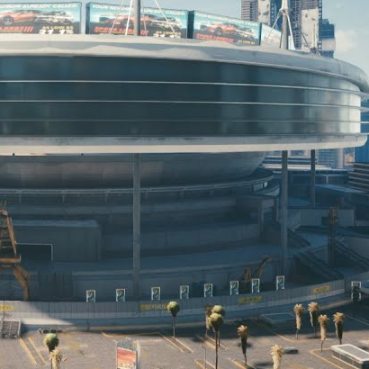

- Lawnmowers Upset 2-1 Against NCR
- Trauma Team -15% During Holidays
 "The bad guys never see us coming." Danger Girl
"The bad guys never see us coming." Danger Girl Gymnast Defects By Vaulting Fences
Gymnast Defects By Vaulting Fences Servers Down - People Unable To Vacuum Or Use Doorbells
Servers Down - People Unable To Vacuum Or Use Doorbells White Supremacists Plotted Attack on NUS Power Grid
White Supremacists Plotted Attack on NUS Power Grid  Scientists Investigating Minecraft Cheating Accusations
Scientists Investigating Minecraft Cheating Accusations ProtoSys's Cyberpsychosis Treatment Breakthrough
ProtoSys's Cyberpsychosis Treatment Breakthrough
NCPD - Law Enforcement Or Just Another Private Security Contractor?
The Night City Police Department, NCPD for short, is the attempt of our free city to uphold some sort of law and order. But I emphasize: it is an attempt. How can it be that the response rate to crime decreases the further you look from the city centre, even diminishing to a measly 13% at the edges of the city? Who really calls the shots in NCPD and why?
"The Police Problem"
In 2076, the NCPD was in bad shape. Towering debts became a notable problem for NCPD after the Unification War when Night City was written off the list of NUSA backed and funded cities when Night City sided with the Free State of Northern California. NCPD could no longer rely on goverment funds so shortly after NCPD was transferred to private ownership to increase its profitability and it's money problem was termed "the police problem". Notice how the emphasis of the problem relies on money and profits, not reducing the crime rates. The chief of police was replaced by a Data Term sales executive who fired close to half of the officers, reduced patrols, and ordered beat cops to prioritize writing tickets. This reduced costs and seemed to increase the flow of creds, but only worsened Night City's crime rate. The reorganization also involved a contracts with prison and ambulance corporations as well as charging citizens 5 creds per minute to make 911 calls.
Fatal Warning Shots
Even while the creds flowed in, the NCPD still remained outnumbered and occasionally outgunned by criminals in 2077. Due to the overwhelming level of violence and criminal activity in Pacifica and the Northside Industrial District of Watson, the NCPD has ceded any jurisdiction in those areas, and will also not venture into the Badlands. The safest areas of the city are City Center and Westbrook, while Heywood, Santo Domingo, and the remainder of Watson range from moderately to extremely dangerous. Notice how there are way more patrols with better equipment seen around the City Center, but the further you go the less NCPD presence there is? That's to increase effectiveness and reduce the mortality rate of officers and the loss of expensive equipment. Over the years the department also petitioned the Night City Council to enact policies that grant it more legal authority and protections. Since 2077 and as of 2080, NCPD officers have several extreme procedural abilities, including: officers may detain individuals without bringing charges against them for up to one year; shooting an individual in a limb is regarded as a warning shot, not a usage of lethal force; vehicles that do not immediately pull over when flagged for a traffic stop may be fired upon; and collateral damage, including civilian deaths, is permissible when using lethal force to neutralize a cyberpsycho just to name a few.
The Gamification Of Law Enforcement
So far I have written about the management side of things, but what about the boots on ground, the rank and file of the NCPD? They may have the authority and protections to use lethal force and other questionable tactics to bring "law and order" to Night City, but as long as they joined the force with good intentions it shouldn't matter right? Well, as of 2079 the Performance Based Rank, PBR for short, was implemented as a way to motivate officers to align their goals with the NCPD's. The PBR in essence, means that the police no longer get paid a fixed monthly salary. Instead, they are rewarded for the results they produce: the amount of profit they generate for the department and the amount of cases closed. So they get paid for doing what their higherups deem the most effective and beneficial. Rushing to close cases as fast as possbile with the minimum of proof is probably a quite effective way to increase one's PBR and pay. Why even try to stop street racers with the NCPD's underpowered cruisers if the destruction of equipment will only lower your PBR? You could just make deals and collect bribes for each race, making it a zero risk way to increase your reputation and pay.
The Meaning Of The Word "Police"
To understand how and where these decisions came from you need to look at the flow of creds. So where does NCPD get it's funding besides tickets, fines and black money? The chief of the NCPD is a direct subordinate to the mayor and the city council. Most of the seats belong to corporate-backed individuals, therefore the loyalty lies with the corporations. The question becomes, is the NCPD really a law enforcement body, does it deserve to be called a Police Department or should it be renamed something along the lines of Night City Private Security Force? Is the only hope of security for the average Joe a rifle from Budget Arms or a disposable handgun from the Vendit?